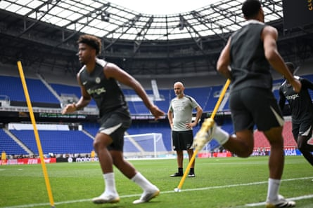

C helsea have already made over £80m from their Club World Cup adventure but they can achieve something priceless against Paris Saint-Germain. This goes beyond gaudy gold badges and money in the bank. The season with no end is almost over, the final of the tournament that nobody asked for is here and while Chelsea have no intention of getting carried away if they triumph in New Jersey on Sunday it is also the case that there would be no better way to demonstrate that they are on to something with their youth-driven project than by beating Luis Enrique’s awesome PSG.
Easier said than done, of course. One school of thought is that Chelsea will have done well if they leave the MetLife Stadium with their dignity intact. Premier League opponents hold no fears for PSG, whose path to Champions League glory was paved by wins over Manchester City, Liverpool, Aston Villa and Arsenal, while they were in terrifying form against Real Madrid on Wednesday. It finished 4-0 , but it could have been 10; PSG really were that good and the reality is there will only be one outcome if they hit those heights again.
A free hit for Chelsea , then? They have made plenty of cash from the tournament, boosting their profitability and sustainability position. They have answered questions about their mentality by coming through a series of challenges. Clear evidence of progress means Chelsea face the European champions able to resist the temptation to judge themselves on one big game.
Chelsea aim to be sustainable. That means maintaining a steady temperament no matter what happens against PSG. It is worth going back to the club finishing 12th in their first season under the ownership of Todd Boehly and Clearlake Capital. The criticism was fierce and sustained. The perception was of a chaotic institution.
Yet Chelsea stuck with the strategy implemented in January 2023 and continued to buy more young players. They know that they have made mistakes along the way – there is no appetite for any more mid-season managerial changes – but there is satisfaction with how they have not deviated from their chosen path.
Replacing Mauricio Pochettino, whose approach did not suit the squad, with the more technical but more inexperienced Enzo Maresca last summer? “It’s much more about tactics,” Malo Gusto, the Chelsea right-back, said of the change from Maresca to Pochettino. “That’s why we are in the final – it’s because of him.”
Chelsea laugh at the narrative about needing older players. They won the Conference League last season and are back in the Champions League. They appear to have bought well this summer and are pleased with the recruitment team of Paul Winstanley, Laurence Stewart, Sam Jewell and Joe Shields.
Enzo Maresca watches his Chelsea side train before the Club World Cup final.Photograph: Darren Walsh/Chelsea FC/Getty Images
It was noted before the tournament that results will follow if you put the right strategies in place and build patiently. Chelsea have invested in data and scouting. It cannot be a coincidence that they are the second-youngest team at the Club World Cup. The youngest? PSG. A source suggests that PSG and Chelsea have given other clubs a model to follow. “Aggressive, fresh teams,” is the observation. Another is that Chelsea were signing young players long before PSG adopted the model.
PSG are further along in their development, though. Having a dash of experience in key areas surely helps while they also have the more established coach.
Chelsea met with Luis Enrique after sacking Graham Potter in April 2023, only to go with Pochettino. Hindsight is a funny thing. It is not easy to know how a foreign coach will adapt to the Premier League. Luis Enrique had just come off a disappointing World Cup with Spain. It is not rewriting history to say his stock was not as high as it is now; that he had dipped since winning the Champions League with Barcelona in 2015.
In any case Chelsea are happy with Maresca’s first year in charge. They are adapting to his positional-based style and play with a clear idea. “Most people expect PSG to win but we don’t think that,” Levi Colwill said on Friday. “When you play for Chelsea you’re not scared to play against anyone. I think they’ll be looking at our forwards and know it’s not going to be easy.”
The centre-back acknowledged that dealing with the ferocity and immediacy of PSG’s press will not be easy. Do Chelsea play out of the back regardless? “You have to respect how they press but we’re not going to change our whole way to play them,” Colwill said. “We’ve got this far playing our football so why are we going to change that now?”
Everyone has a plan until Ousmane Dembélé, Désiré Doué and Kvara Kvaratskhelia run at them, though. The feeling is that Maresca has no intention of parking the bus; that betraying his identity for one game would be folly. Still, though, Chelsea have to box clever. Do Enzo Fernández and Moisés Caicedo need an extra body in midfield to deal with João Neves, Vitinha and Fabián Ruiz? Can Chelsea beat the press if Roméo Lavia is out? How to contain Achraf Hakimi and Nuno Mendes’s surges from full-back? Colwill noted the heat in New Jersey, saying it cannot become a basketball game.
But Chelsea have their weapons. They have Cole Palmer and the counterattacking threat of Pedro Neto and Liam Delap. João Pedro scored two stunners against Fluminense ; Fernández and Caicedo are in sparkling form.
Speaking at a Fifa technical briefing on Thursday, Roberto Martínez noted that the best way to play PSG is to go man to man, to hit the triggers required to exploit the high line. Bayern Munich caused them problems in the quarter-final. They still lost, though. The issue is that the press has to be perfect. PSG can rip through at will.
Chelsea know they are facing the best team in the world. PSG were supreme against Inter in the Champions League final. Logic suggests this one should only go one way. Chelsea have other ideas. Imagine how they would feel going into next season as world champions. Chelsea have no plans to change course but beating PSG would give the project immense validation.
Chelsea will be underdogs against PSG and will be without Noni Madueke, who has left the camp to complete a £52m move to Arsenal. Bournemouth have agreed a £25m deal to sign the Serbian goalkeeper Djordje Petrovic and Milan are interested in Nicolas Jackson but are unlikely to be able to afford the striker.
“Noni is in contact with a new club,” Maresca said. “I said in one of the last press conferences that if players want to leave it’s difficult for the club and for the manager. Noni decided to leave. Nobody told Noni he had to leave. If he is happy, we are happy.”
Lavia was absent from training on Friday and it remains to be seen if Caicedo has shaken off an ankle injury. “ Moisés is such an important player for us,” Maresca said.“This morning he trained but he couldn’t take part in the session fully. We hope he can play on Sunday.”
Maresca bristled at the idea that Chelsea will have to suffer and endure long spells without the ball.
“Who said that?” the Italian said. “We’ll see in two days. For sure they are a top team, the best team in the world. Every game is different. We are going to try our best for a good game.”